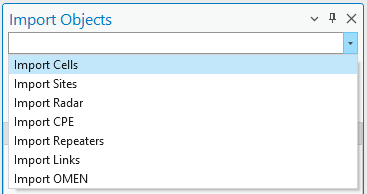
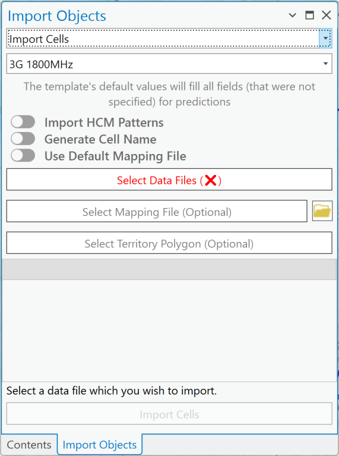
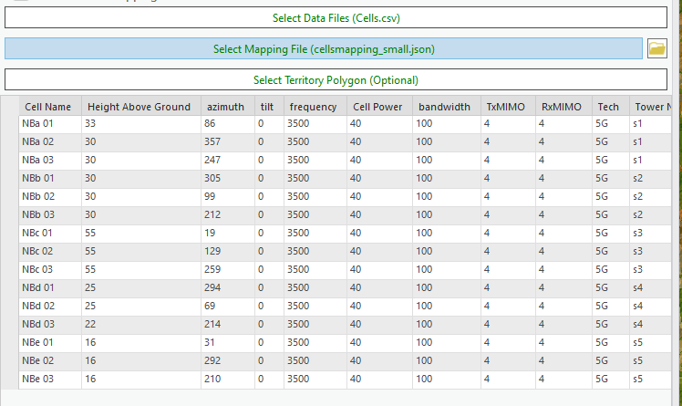
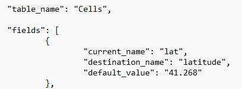

Import Objects
Import Objects lets you bring network objects in from external documents, without creating them manually — invaluable for extensive or complex datasets. Cellular Expert for ArcGIS Pro supports importing three widely used file formats: .xls, .xlsx, and .csv. For mapping files, it supports .json.
Key benefits:
- Time-saving — instead of manually entering or recreating network objects, quickly import data from existing documents, significantly reducing setup time.
- Data consistency — importing keeps all network objects consistent with the original data source, minimizing discrepancies and errors.
- Support for multiple formats —
.xls,.xlsx, and.csvsupport integrates with a variety of data workflows.
Click the Import Objects button to open the dialog. Expand the Import dropdown menu and select the object to import — the dialog is filled with options to define the data and mapping files.

Note: The exact object types available in the Import dropdown depend on the module. The screenshot above (as shown identically in the RCP and RLP manuals) does not list Mesh Nodes, but RLP's own chapter heading is explicitly titled "Import Sites, Radar, CPE, Repeaters, Links, or Mesh Nodes" — so Mesh Nodes are importable for RLP even though this particular screenshot does not show that entry. Only the object types with a documented dedicated Add Object workflow for a given module are confirmed as fully supported end-to-end for that module.
Import Cells
Importing Cells has additional parameters compared to other import options.

| Field | Description |
|---|---|
| Template | Takes necessary parameters from the template during import. Template values are used when parameters are missing from the text file and mapping file. |
| Import HCM Patterns | Antenna patterns are created and imported based on specific antenna name values provided in an HCM agreement. Requires the data files to have an antenna_type field. |
| Generate Cell Name | Generates a cell name for all selected cells based on these parameters, in this exact order: longitude, latitude, height, azimuth, power, antenna_gain, frequency. Missing fields are skipped. |
| Use Default Mapping File | Applies a default mapping file to the imported data. |
| Select Data Files | Opens a dialog to select the files defining the network objects to import. Supported formats: .xls, .xlsx, .csv, and tables from an .sde connection. The button turns green on a successful selection. |
| Select Mapping File (Optional) | Opens a dialog to select the file (.json) that defines the data to import and the conditions under which it is processed. The button turns green on a successful selection. See Mapping file below. |
| Select Territory Polygon (Optional) | Restricts the import to objects within a selected polygon area. |
Steps
- Click Select Data Files and choose your text file — it loads into the dialog.

- If your data structure differs from the Cellular Expert database, use a mapping file to map your data structure to the Cellular Expert workspace's Cells layer structure.
- Click Import Cells to start the import.
Sites can be imported together with Cells if:
- The mapping file is not used, and the text file has a
site_idfield containing the Site name (as text data), or - The mapping file is used, and the data is mapped to the
site_idfield (as text data).
Mapping File
Data in the import files may have names, values, and units that don't match the Cellular Expert database. An additional mapping file resolves such conflicts.
An empty mapping file can be found in the project's workspace catalog, in the SystemFiles folder. Mapping files are not necessary if the import file data already corresponds to the Cellular Expert database — otherwise, a mapping file is required for a successful import. Values not mentioned in the mapping file are unaffected.
Mapping file structure:

| Key | Description |
|---|---|
table_name |
Defines which network object's values are being mapped. |
current_name |
The name of the value as written in the data file — e.g. lat, a column name in the data file. |
destination_name |
The proper property name (table column name) in the Cellular Expert database — e.g. latitude, to which lat is renamed on import. This property is validated when the mapping file is imported. |
default_value |
The value used when an object in the data file has no value for a particular property — e.g. 41.258 as a default for latitude. An empty string ("") means no default value is applied. |
Import Other Network Objects
Other network objects — Sites, Radar, CPE, Sirens, Repeaters, Links, or Mesh Nodes, depending on the module — can be imported into the Cellular Expert workspace using the same dialog.
| Field | Description |
|---|---|
| Template | Takes necessary parameters from the template during import. Template values are used when parameters are missing from the text file and mapping file. |
| Select Data Files | Opens a dialog to select the files defining the network objects to import. Supported formats: .xls, .xlsx, .csv, and tables from an .sde connection. The button turns green on a successful selection. |
| Select Mapping File (Optional) | Opens a dialog to select the .json file defining the data to import and how it is processed. The button turns green on a successful selection. |